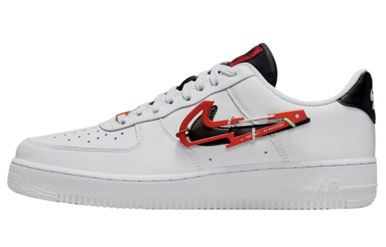

Nike

Tênis Nike
exelente para sair
Vestido com um esquema de cores Summit White e Industrial red. Este Air force one vem totalmente construído em têxtil com uma base Summit White com sobreposições em vermelho Industrial, Swooshes e sola de borracha. A costura Sashiko na biqueira e nos saltos com cadarços brancos e entressola completam o design.
R$1299,99